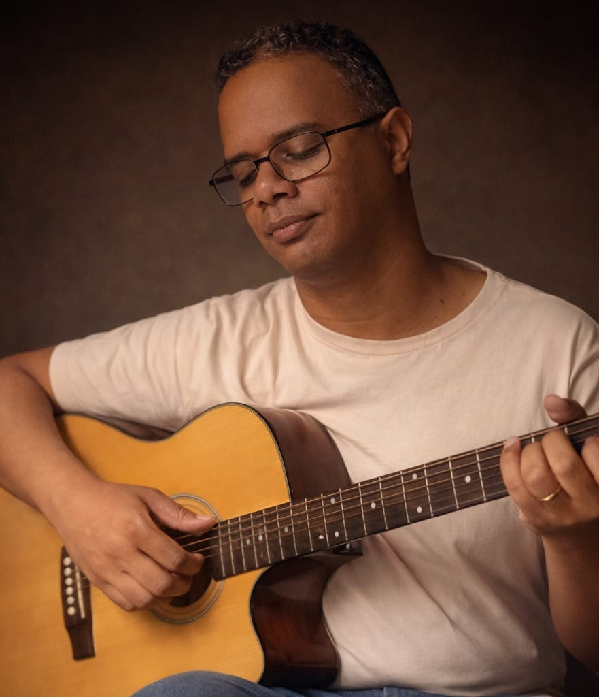

Canções e reflexões inspiradas na Palavra de Deus
O Voz, Violão e Fé nasceu do desejo de transformar a Palavra de Deus em canções e reflexões que acompanhem as pessoas em sua caminhada de fé.
Aqui você encontrará músicas autorais, interpretações e mensagens inspiradas na Bíblia, todas com um mesmo propósito: conduzir o coração para mais perto de Deus.
Escolha a sua plataforma favorita e leve estas canções com você, onde estiver.
Uma breve pausa para meditar na Palavra de Deus
Acompanhe interpretações, canções autorais e reflexões em voz e violão
Acompanhe novos lançamentos, reflexões e canções também nas redes sociais